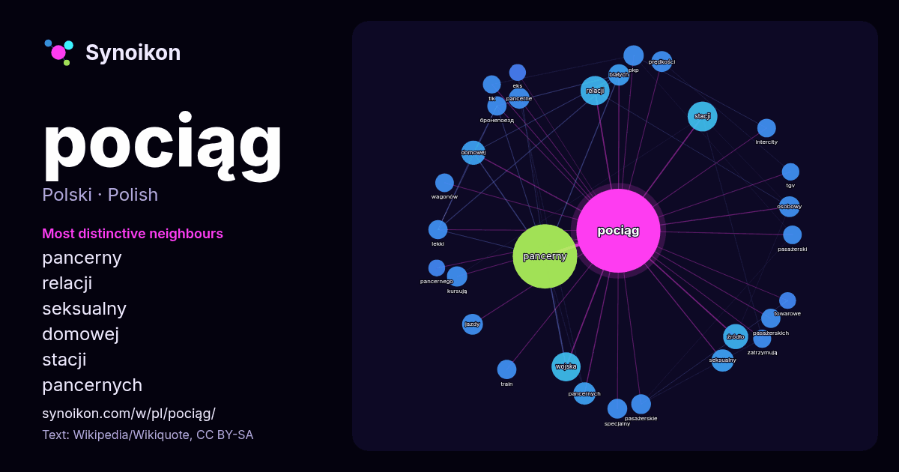

Polski · lista słów dnia
pociąg
“train” · Słowa wokół niego w 1255 wystąpieniach z Wikipedii, Wikiquote.

Najbardziej charakterystyczni sąsiedzi
- pancerny 177×
- relacji 31×
- seksualny 24×
- domowej 22×
- stacji 21×
- pancernych 21×
- pancerne 20×
- źródło 19×
- kursują 19×
- białych 18×
- pasażerskie 18×
- бронепоезд 18×
- osobowy 18×
- train 18×
- pkp 17×
- pasażerskich 17×
- lekki 17×
- intercity 17×
- specjalny 17×
- tlk 16×
× = ile razy częściej niż w ogólnym tekście Wikipedii.
Najczęstsi sąsiedzi
- pancerny 192
- wojny 50
- stacji 41
- relacji 39
- wojska 39
- polskiego 38
- źródło 29
- domowej 27
- pierwszy 25
- pancernych 23
- seksualny 23
- białych 21
- jazdy 20
- osób 20
- osobowy 20
- pancerne 20
- prędkości 20
- ruch 20
- autor 19
- kursują 19
W kontekście
- Pociąg – w pojęciu ogólnym: zestaw wagonów z lokomotywą lub wagonem silnikowym, poruszający się po szynach po wyznaczonej trasie; w transporcie kolejowym Wikipedia snippets · Pociąg
- Pociąg do Hollywood – polska komedia obyczajowa z 1987 w reżyserii Radosława Piwowarskiego. Zdjęcia do filmu były kręcone w Trzebnicy oraz na Dworcu Głównym Wikipedia snippets · Pociąg do Hollywood
- Pociąg Pancerny Nr 2, Pociąg Pancerny „Śmiały”, Pociąg pancerny Nr 53 – uzbrojony w armaty wz. 02/26 i haubice wz. 14/19A, a także wyposażony w czołgi Wikipedia snippets · Śmiały (pociąg pancerny)
- Złoty pociąg – miejska legenda zakładająca istnienie w Polsce ukrytego przez Niemców w trakcie II wojny światowej pociągu pancernego zawierającego liczne Wikipedia snippets · Złoty pociąg (legenda)
- Pociąg rządowy (PRL) – polski pociąg specjalny o nadzwyczajnym przeznaczeniu (skrót PONP) z wagonami o komfortowym wyposażeniu i wysokim standardzie technicznym Wikipedia snippets · Pociąg rządowy (PRL)
- Orient Express – luksusowy pociąg pasażerski, który kursował w ramach działalności międzynarodowej spółki Compagnie Internationale des Wagons-Lits(inne Wikipedia snippets · Orient Express
- kolejowa pod Otłoczynem – czołowe zderzenie pociągu osobowego relacji Toruń Główny – Łódź Kaliska z pociągiem towarowym relacji Otłoczyn – Wrocki, na odstępie Wikipedia snippets · Katastrofa kolejowa pod Otłoczynem
- Pociąg Pancerny „Śmierć” (Nr 15) – pociąg pancerny Wojska Polskiego II RP. W czasie kampanii wrześniowej pociąg brał udział w obronie Twierdzy Modlin Wikipedia snippets · Śmierć (pociąg pancerny)
Więcej słów
Obliczone wcześniej 2026-10-09 z ustawieniami domyślnymi (±5 słów, średni korpus). Interaktywna mapa może odświeżyć dane na żywo.
Interfejs przetłumaczony maszynowo; poprawki mile widziane.